Chapter 1: Simple Linear Regression
Part 3
Statistical Modeling
Topics 📌
Transformations
Outliers and Influential Points
What to Do When Regression Conditions Are Violated
Possible issues to address:
Lack of normality in residuals
Patterns in residuals
Heteroscedasticity (nonconstant variability of errors)
Outliers: influential points, large residuals
Data Transformations
Possible Goals of Data Transformations
Address nonlinear patterns
Stabilize variance
Remove skewness from residuals
Minimize effects of outliers
Common Transformations
| Name | Mathematically |
|---|---|
| Logarithm | \(Y\rightarrow\log(Y)\) |
| Square root | \(Y\rightarrow\sqrt{Y}\) |
| Exponential | \(Y\rightarrow e^Y\) |
| Power function | \(Y\rightarrow Y^k\) |
| Reciprocal | \(Y\rightarrow 1/Y\) |
Transformations can be applied to either response \((Y)\) or explanatory \((X)\) variables.
Both a science and an art
Often requires trial and error
Examples: Doctors and Hospitals in Counties
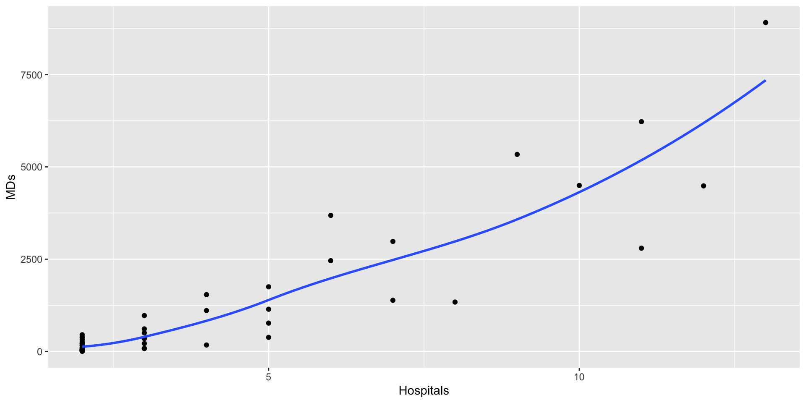
Call:
lm(formula = MDs ~ Hospitals, data = CountyHealth)
Coefficients:
(Intercept) Hospitals
-1120.6 557.3 
Linear Model
The fitted linear model is
\[ \widehat{MDs} = -1120.6 + 557.3 \mbox{ Hospitals} \]
- Predict number of MDs in a county with 10 hospitals.
Residual Diagnostics
# Residual vs fitted plot
gf_point(resid(mod1) ~ fitted(mod1)) |>
gf_hline(yintercept = ~0, col = "red")
# Normality plots
# install.packages("gridExtra")
# Use the grid.arrange() function to condense and arrange plots
library(gridExtra)
plot1 <- gf_histogram(~resid(mod1))
plot2 <- gf_qq(~resid(mod1)) |>
gf_qqline()
grid.arrange(plot1, plot2, ncol=2)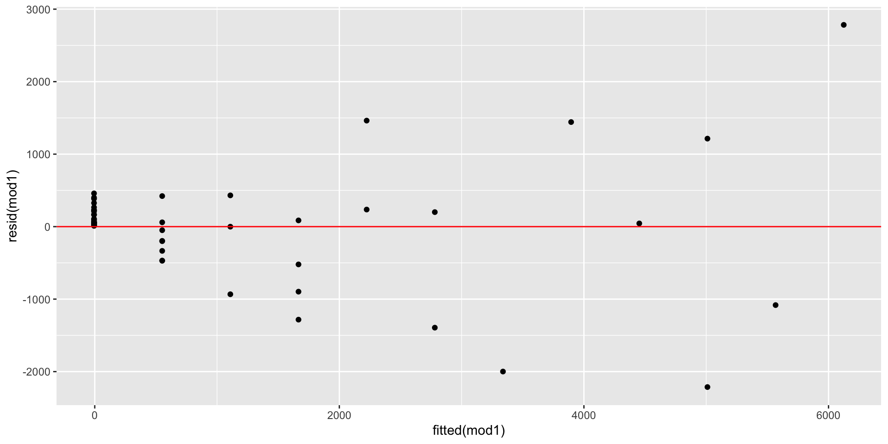
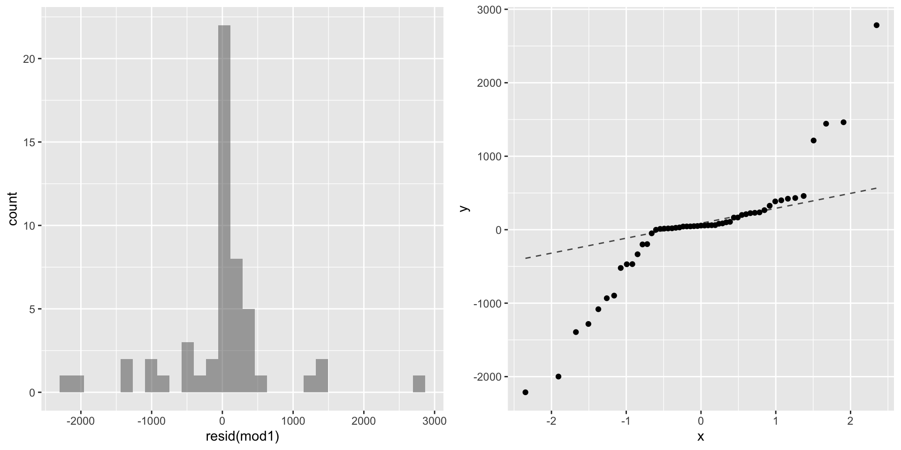
Transformed model plots
- Consider whether square root or log transformation of the number of MDs results in a better fit.
# Transform data
CountyHealth <- mutate(CountyHealth, SqrtMDs = sqrt(MDs), logMDs= log(MDs))
# Create and save plots
plot1 <- gf_point(SqrtMDs ~ Hospitals, data = CountyHealth) |>
gf_smooth()
# Display plots concisely
plot2<-gf_point(logMDs ~ Hospitals, data = CountyHealth) |>
gf_smooth()
grid.arrange(plot1,plot2,ncol=2)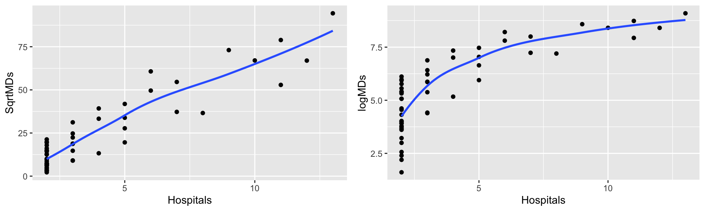
Square Root Transformation
Try the \(\sqrt{Y}\) transformation and fit the equation.
The red line is the least squares regression line.
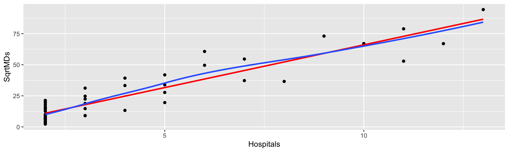
Call:
lm(formula = SqrtMDs ~ Hospitals, data = CountyHealth)
Coefficients:
(Intercept) Hospitals
-2.753 6.876 Re-assess conditions
Fitted model with square root transformation
Transformed model is satisfactory.
The fitted equation is now \[ \widehat{\sqrt{\mbox{MDs}}} = -2.753 + 6.876 \mbox{ Hospitals} \]
Questions 📋
Predict the number of MDs in a county with 10 hospitals.
Interpret the slope coefficient.
Southeast Island Mammal Species
Southeast Asian Islands

Example: Indonesian Wildlife
Bako Park 
Green turtles 
Proboscis Monkey
Species vs Area
Investigate the dependence of number of species on the size of the island.
Doesn’t make sense that species would be a linear function of area.
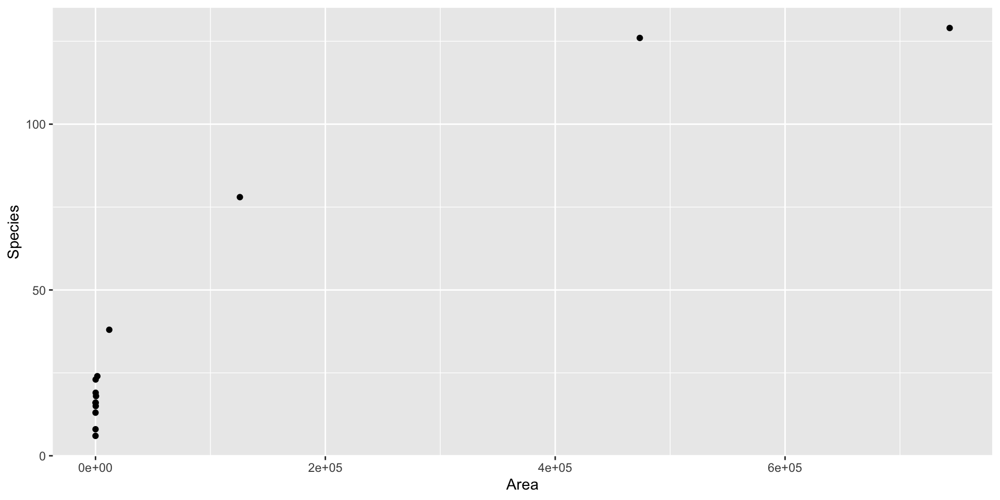
Transformation Consideration
- Address the strong curvature and extreme values using a natural log transformation. Consider the following candidates:
Fit the Best Model
Logging both response and predictor variables appears to give the best results.
Proceed by fitting a simple regression using the log-transformed variables.
Fitting the Log-Log Model
Call:
lm(formula = logSpecies ~ logArea, data = SpeciesArea)
Coefficients:
(Intercept) logArea
1.6249 0.2355 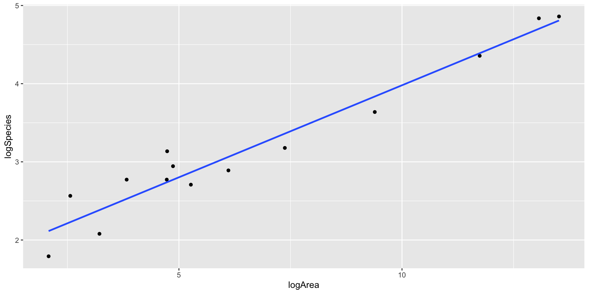
The fitted log-log model for predicting number of species
\[ \widehat{\log(\mbox{Species}}) = 1.625 + 0.2355 \cdot \log(\mbox{Area}) \]
Use the model to obtain the predicted value and residual for Java.
Interpret the slope coefficient in context.
- Back transform to get the prediction on the original scale: \[ \widehat{\mbox{Species}} = e^{1.625 + 0.2355 \cdot \log(\mbox{Area})} = 5.08\cdot \mbox{Area}^{0.235} \]
Re-assess log-log model
Using R to get Java predictions from the log-log model 📋
- Sample code:
# Get the actual Java values
filter(SpeciesArea, Name == "Java") |>
select(c(Name, Area, Species))
# Obtain the predictions
1.625 + 0.2355 * log(125628) #Fitted on the log scale
exp(1.625 +0.2355 * log(125628)) #Fitted on the original scale
# or create a function
island_fun <- makeFun(mod3)
exp(island_fun(log(125628)))
# or use the R predict function with "newdata" key
predict(mod3, newdata = data.frame(logArea = log(125628)))
exp(predict(mod3, newdata = data.frame(logArea = log(125628))))- Try this for a different island ✅
Outliers and Influential Observations
Olympic Long Jump Data
- Gold medal distance as a function of time:
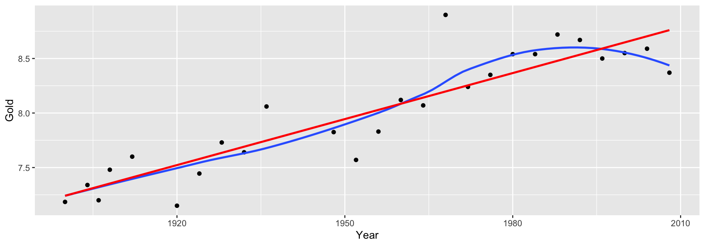
❓ What do you think has happened since 2008?
Fit model and identify outlier:
Call:
lm(formula = Gold ~ Year, data = LongJumpOlympics)
Coefficients:
(Intercept) Year
-19.48359 0.01407 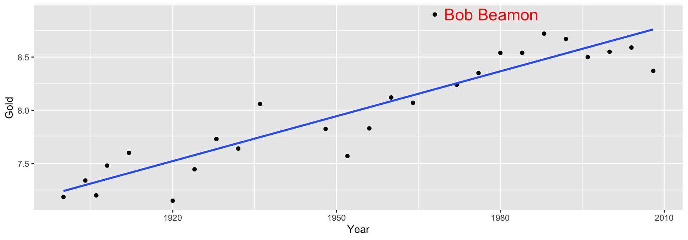
Bob Beamon’s record-breaking long jump
We can use the package plotly to identify points interactively (optional)
Obtain the plot of residual versus fitted values
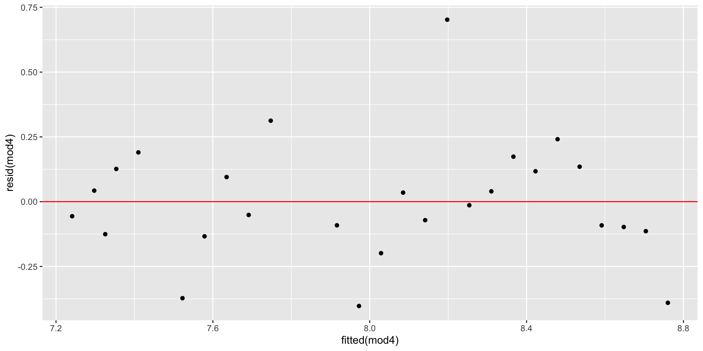
Other types of residuals
Scaled residuals are helpful in identifying outliers:
- Standardized residuals. Residuals divided by estimated standard deviation of residuals:
\[ \frac{y - \hat y}{\hat\sigma_\epsilon} \]
- Studentized residuals. Residuals divided by standard deviation of residuals from the regression after omitting the point in question
Removes effect of extreme observation on standard deviation
Implicitly involves fitting \(n\) different regression models.
\[ \frac{y - \hat y}{\hat\sigma_i} \]
Why studentize?
Concern: An unusual value may exert great influence on the fit.
Its residual might be underestimated because the model “moves” a lot to fit it. or
The standard error of regression may be inflated due to the large outlier residual
Remedy: We studentize by fitting the model without the influential case, finding a new estimate \(\widehat{\sigma_\epsilon}\).
Plots of standardized and studentized residuals versus fitted
#Standardized resids
p1 <- gf_point(rstandard(mod4) ~ Year, data = LongJumpOlympics, ylim = c(-4,4),
main="Standardized Residuals") |>
gf_hline(yintercept = ~0) |>
gf_hline(yintercept = ~c(-3,-2,2,3), lty = 2, data = NA)
#Studentized resids
p2 <- gf_point(rstudent(mod4) ~ Year, data = LongJumpOlympics, ylim = c(-4,4),
main="Studentized Residuals") |>
gf_hline(yintercept = ~0) |>
gf_hline(yintercept = ~c(-3,-2,2,3), lty = 2, data = NA)
grid.arrange(p1 ,p2, ncol=2)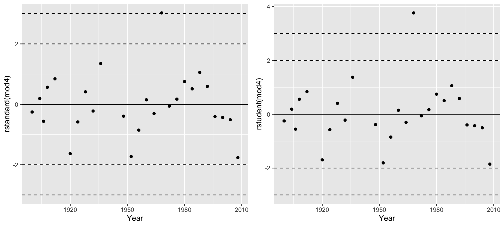
Beamon is an extreme outlier!

Example: The Butterfly Ballot in the Year 2000 Election


Plot the Votes by County
Linear model fit and plots
Is Palm Beach an Influential Outlier?
Is Palm Beach an Influential Outlier?
gf_point(Buchanan ~ Bush, data = PalmBeach) |>
gf_smooth(method = "lm", se = FALSE) |>
gf_fun(mod6_fun, col = "red") |>
gf_refine(annotate("text", label = "Complete", x = 2.5e+05, y = 1400, size = 6, hjust = 1)) |>
gf_refine(annotate("text", label = "Without\nPalm Beach",
x = 2e+05, y = 700, size = 6, hjust = 0, vjust = 1))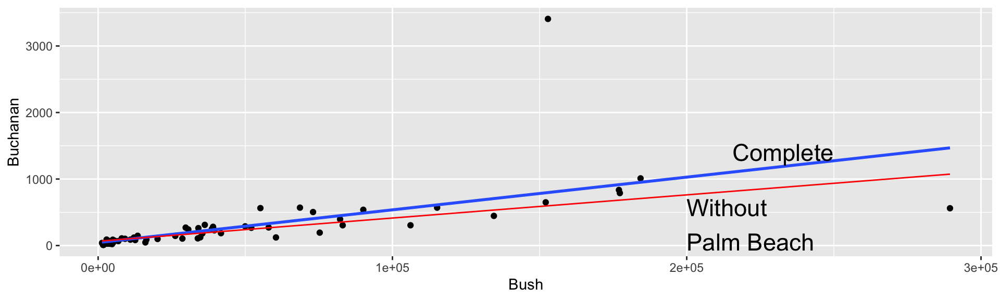
Influence and Leverage
Influence: the effect of a single data point on the regression line depends on:
how well it matches the “trend” of the rest of the points
how “unusual” is its predictor value
Leverage: measures the potential for a case to affect a regression fit, based on an “unusual” predictor value. (Chapter 4)
Summary
When regression conditions fail, transforming variables can improve model fit.
Log and square-root transformations often help with curvature, unequal spread, and skewness.
Outliers and influential points can distort a regression line and must be checked using diagnostics.
After any adjustment, reassess conditions and interpret results in context.